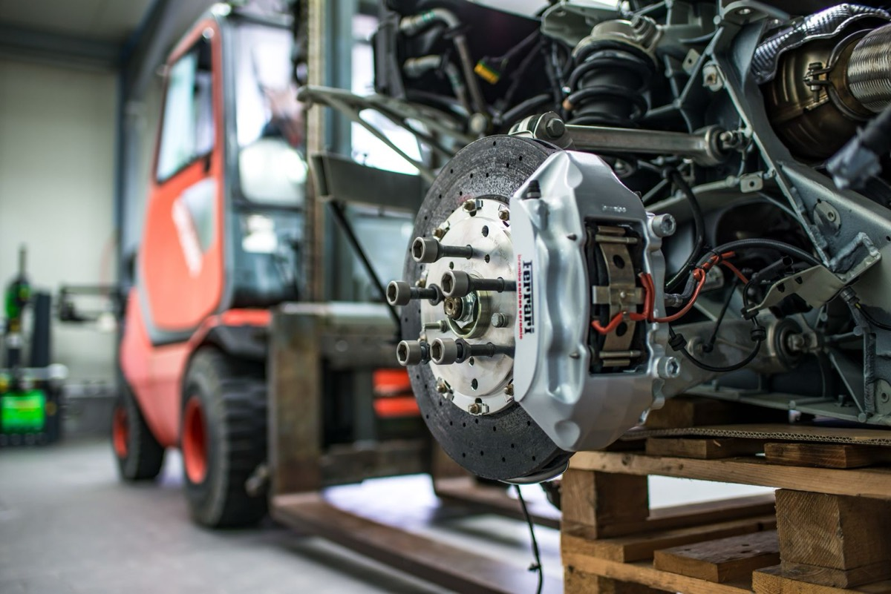
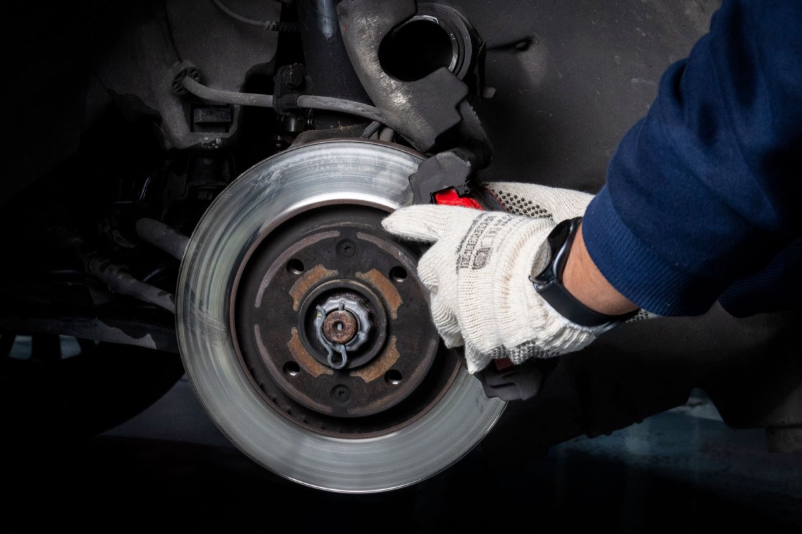

Resurface or Replace a Rotor: The Discard Thickness Number Decides
Whether a brake rotor can be machined or has to be replaced is not a judgment call, and it is not about how the surface looks. Every rotor carries two thickness numbers, and the gap between them is the only material you are allowed to remove for the entire remaining life of that disc. The upper numb
The whole decision is one subtraction. A PowerStop F-150 rotor is 1.180 in. nominal and 1.120 in. at discard — 0.060 in. of total usable material. Machining takes some of that, so a disc with 0.015 in. left cannot be resurfaced back into spec no matter how good the surface looks.
The drilled and slotted rotor in this group has more usable material than the plain one — 0.095 in. from nominal to discard, against 0.060 in. on the solid-surface disc. Holes and slots did not cost it durability margin.

Whether a brake rotor can be machined or has to be replaced is not a judgment call, and it is not about how the surface looks. Every rotor carries two thickness numbers, and the gap between them is the only material you are allowed to remove for the entire remaining life of that disc.
The upper number is nominal — the thickness when new. The lower is discard — the thickness below which the disc is done. Resurfacing cuts metal off the face, and that metal comes out of that gap.
Once you know the two numbers, the question answers itself.
The gap is smaller than most people expect
Here is a real example from a 2009 F-150 front rotor, the PowerStop AR85130SCR, read live on 18 November 2026:
- Nominal thickness: 1.180 in. (29.97 mm)
- Discard thickness: 1.120 in. (28.45 mm)
That is 0.060 in. — about 1.5 mm — of total usable material across the entire service life of the rotor, both faces combined.
A typical resurfacing pass removes a few thousandths of an inch per face. Two faces, one pass each, and a meaningful fraction of that 0.060 in. is gone permanently. The disc has not been restored to new; it has been moved closer to its discard point.
This is why a rotor that has already been machined once is usually not a candidate for a second cut. The material to do it with was spent the first time.

Five rotors, with their actual numbers
Every figure below was read from the product listing on 18 November 2026. The last column is arithmetic: nominal minus discard.
| Rotor | Surface | Diameter | Nominal | Discard | Usable |
|---|---|---|---|---|---|
| PowerStop AR85130SCR (2009 F-150) | solid | 12.99 in. | 1.180 in. | 1.120 in. | 0.060 in. |
| Frozen Rotors 2527FZR (2009 F-150) | solid | 12.99 in. | 1.180 in. | 1.120 in. | 0.060 in. |
| EBC RK7042 (1997-1999 F-150) | solid | 12.12 in. | 1.011 in. | not published | — |
| PowerStop AR8584XPR (F-150) | drilled & slotted | 12.12 in. | 1.185 in. | 1.090 in. | 0.095 in. |
| Summit SUM-BRC-65119PR (F-150/Expedition) | drilled & slotted | 13.78 in. | 1.339 in. | 1.260 in. | 0.079 in. |
PowerStop AR85130SCR, 2009 F-150, each → $89.99 · 7 reviews · checked 18 Nov 2026
Frozen Rotors 2527FZR, 2009 F-150, each → $159.28 · 7 reviews · checked 18 Nov 2026

Two rotors, one set of numbers
Look at the first two rows. The PowerStop AR85130SCR and the Frozen Rotors 2527FZR carry identical thickness specifications — same 12.99 in. diameter, same 1.180 nominal, same 1.120 discard, same 0.060 in. of usable material. They are, dimensionally, the same casting.
The prices are $89.99 and $159.28. The difference is not dimension and it is not usable wear range. Frozen Rotors’ listing describes a 60-hour cryogenic process applied to the disc, which it claims improves wear resistance and stability.
Whether that treatment is worth $69.29 on a rotor with 0.060 in. of life in it is your call. What the specs do establish is that you are not buying more wearable material for the money — you are buying a treatment applied to the same amount of it. If your plan is to machine the rotor at the next pad change, the treatment does not change the arithmetic in the usable column.

The drilled rotor that has more margin, not less
This is the counterintuitive result in the table, and worth stating plainly because the opposite gets repeated constantly.
The plain-reflector argument is that drilling and slotting remove mass and create stress risers, so a drilled rotor must have less durability margin than a solid one. On this shelf, that is not what the numbers say.
The PowerStop AR8584XPR is drilled and slotted with 0.095 in. between nominal and discard — more usable material than the 0.060 in. on the solid-surface PowerStop for a different F-150 application. The Summit drilled and slotted pair carries 0.079 in.
Both cross-drilled rotors here have a wider machining window than either solid-surface rotor.
What this does not prove. Usable thickness range and resistance to cracking are different properties, and a bigger nominal-to-discard gap says nothing about how a disc handles thermal cycling. The drilled rotors here are also physically larger discs — 13.78 in. and 12.12 in. against 12.99 in. — for different applications, so this is not a controlled comparison of drilling versus not.
What it does show is that “drilled rotors have less material to work with” is not a safe assumption to make from a part title. The number is printed on the listing. Read it.
Why the spec is stamped on the rotor
The discard thickness is cast or stamped into the edge or the hat of most rotors, which is why a shop can tell you whether your disc is machinable without looking up a catalog. If you are doing this yourself, that stamp plus a micrometer is the entire diagnostic.
Measure at several points around the disc, not one. A rotor that reads 1.150 in. at one spot and 1.115 in. at another is not merely worn — it is worn unevenly, and that pattern usually points at a caliper that is dragging rather than at the rotor itself. Machining that disc to a uniform surface removes material down to the thinnest reading, so uneven wear costs you the difference twice.
The reasons to replace instead of machine
It is already at or under discard. Nothing to discuss. Below the number, the disc cannot shed heat as designed and is thinner than the caliper was engineered for.
It has been machined before. The margin was spent. A second cut usually lands under spec.
It is cracked, has hard spots, or is badly scored. Machining removes metal; it does not repair structure. Cracks between the holes on a drilled rotor, bluing from overheating, or scoring deep enough to feel with a fingernail are all replacement signals regardless of thickness.
It is rusted through the vanes. Surface rust on the friction face is normal and machines off. Rust that has eaten into the internal cooling vanes or the outer edge is structural.
The rotor is cheap relative to the labor. On many trucks a new rotor costs less than the machining plus the time to drive it to a shop and back. Check both prices before assuming resurfacing is the economical choice — often it is not, and this is the reason replacement is so common.
The pairing rule that actually matters
New pads on a rotor surface that is not flat to the new pad is how you get noise, uneven bedding, and a pedal that feels worse after the job than before. Whatever you decide about machining, the pad and the rotor surface have to be matched.
Many manufacturers specify new rotors with new pads as the default. Where that is in the service information for your vehicle, it is the answer, and the arithmetic above explains why: the disc has a limited amount of material and a used one has already spent some of it.
The rotor that does not publish its discard thickness
One row in that table has a dash in it, and the dash is worth explaining rather than hiding. The EBC RK7042 lists a 12.12 in. diameter and a 1.011 in. nominal thickness, and its listing does not state a discard thickness at all.
That is not a defect in the part — it means this listing cannot answer the resurfacing question on its own. For the other four rotors the decision is arithmetic done from the page. For the EBC you would need the number from the rotor’s own edge stamp or from EBC directly.
Three of the five listings publish both figures, which is the useful finding: most of this shelf does tell you, so a listing that omits it is the exception rather than the norm. Check before buying if machining is part of your plan.
What I could not verify
- Machining cost. Shop labor rates for resurfacing vary by region and none of the listings price the service, so the “machining versus new rotor” cost comparison in this article is stated qualitatively rather than as a dollar figure.
- Whether the Frozen Rotors cryogenic treatment changes wear rate. The claim is the manufacturer’s, the thickness specs are identical to the untreated PowerStop, and I have no independent measurement of wear over time.
- Cracking resistance of the drilled rotors. The usable thickness ranges are published and quoted above. How those discs behave under repeated thermal cycling is not something a product listing establishes.
Is any of this a CARB issue in California?
No. Brake rotors are not emissions equipment, there is no Executive Order to look for, and rotor condition has no bearing on a smog inspection. This is a safety and wear question, not a regulatory one.
Topics
- Brakes
- PowerStop
- F-150